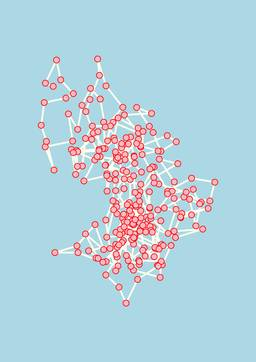
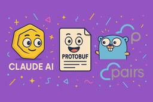

Pairs Engineering - Medium
https://medium.com/eureka-engineering?source=rss----5c512e0ddc60---4
Learn about Pairs’ engineering efforts, product developments and more.
フィード

State of State Management in Large-Scale iOS Apps — The Answer is Excel
Pairs Engineering - Medium
3日前

How We Built an API Authorization System with a Protobuf Plugin and AI Assistance from proto file…
Pairs Engineering - Medium
6日前